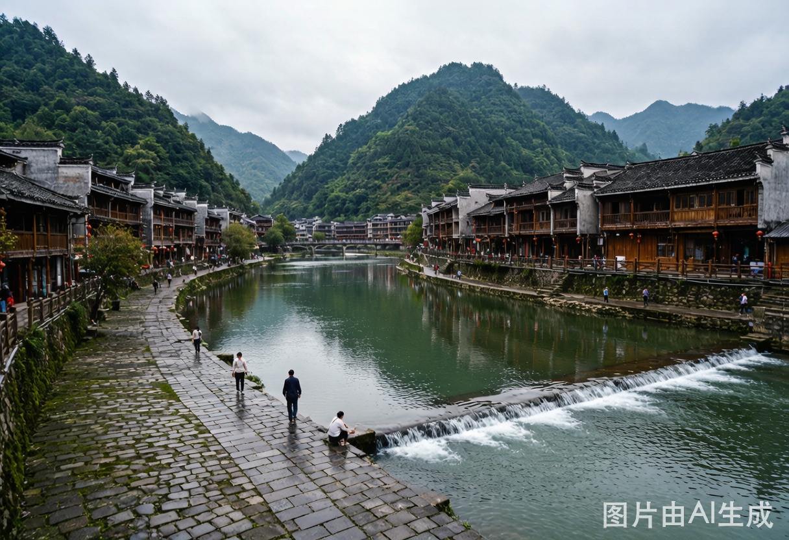

Guizhou · June 2026
肇兴侗寨
6 月 18 日 — 20 日 · 三天两晚 · 家辉 & 叶老师
G6336
深圳北 → 广州南
09:50 — 10:27
→
D1860
广州南 → 从江
10:57 — 14:28
→
G3885
从江 → 广州南
18:15 — 21:07
→
G6335
广州南 → 深圳北
21:38 — 22:15
非花驿 · 鼓楼全景民宿 ·
篝火广场旁
· 免费接站
Packing List
行前准备清单
📷
摄影装备
相机（单反/微单）+ 备用电池
存储卡（2 张）+ 充电器
拍立得 + 相纸
建议 2–3 盒，每盒 10 张。贵州潮湿，相纸密封保存
相机防雨罩 / 防水袋
6 月贵州雨季，设备比人金贵
👟
衣物鞋帽
徒步鞋 / 防滑运动鞋
堂安石板路 + 寨内青苔，防滑第一
轻薄外套一件
山区傍晚 18–20°C
速干 T 恤 / 衬衫 2–3 件
折叠伞
防晒又防雨
拖鞋一双（寨内 / 民宿穿）
💊
日用防护
驱蚊液 / 驱蚊贴
稻田 + 水边，蚊虫是标配
止痒药（青草膏 / 无比滴）
防晒霜
山区紫外线不低，徒步那天尤其
个人洗漱用品 + 毛巾
📋
证件 & 电子
身份证
高铁检票 + 民宿入住，缺一不可
少量现金 ¥300–500
村内小店 / 路边摊备着
充电宝 + 数据线
高铁 4 小时 + 候车，带够容量
蓝牙耳机（高铁打发时间）
⏰
出发前确认
6 月 17 日（周三）联系民宿预约接站
告知 D1860 到从江 14:28，两人，两件行李。WorkBuddy 已设自动提醒。
6 月 19 日（周五）联系民宿预约送站
告知 6/20 退房，从江站 18:15 发车，确认出发时间。WorkBuddy 已设自动提醒。
下载贵州离线地图（高德 / 百度）
山里信号不稳定，导航靠离线
确认天气预报，如有暴雨准备 Day 2 备选方案
行李箱：三天两晚一个登机箱足够，轻装为主
⏰ 时间节点提醒
6 月 17 日（周三）10:00
— WorkBuddy 自动提醒：联系民宿预约接站
6 月 19 日（周五）10:00
— WorkBuddy 自动提醒：联系民宿预约送站
6 月 18 日（周四）09:50
— 深圳北站出发，建议 09:00 前出门
6 月 20 日（周六）12:00
— 退房，民宿送站，18:15 从江发车
DAY 1 · 6.18 出发
DAY 2 · 6.19 寨内
DAY 3 · 6.20 返程
Day 1
6 月 18 日 · 周四
出发 · 入寨 · 篝火
09:50
深圳北
出发
G6336 深圳北 → 广州南，37 分钟。带上身份证、充电宝、耳机。
10:27
广州南换乘 · 30 分钟
不 用 出 站 ， 走 便 捷 换 乘 通 道 。 30 分 钟 够 了 ， 但 别 磨 蹭。
10:57
D1860 广州南 → 从江 · 一等座 · 3.5h
车上吃午便当或零食。后半程贵州山水渐入眼帘。
14:28
从江站
抵达，民宿司机接站
出站口会合。提前一天（6 月 17 日）约好接站。从江站 → 肇兴约 40km，50 分钟山路。
15:30
入住
入住非花驿，休整
放行李，洗把脸，换上舒服的鞋。推开窗就是鼓楼。
16:00
寨内
寨内漫步
鼓楼广场 → 风雨桥 → 仁团寨 / 义团寨简走一圈。6 月傍晚光线最好，拍照黄金时段。
小红书看攻略
↗
📸
女生人像 · 拍照指南
16:00–17:30 黄金光线。
风雨桥上逆光拍发丝光，观景台用长焦拍寨子全景人像。穿搭：浅色上衣 + 侗寨木色背景，对比干净。
小红书搜人像攻略
→
18:00
晚餐
侗族酸汤鱼
寨内找一家评分高的。点单建议：酸汤鱼 + 腌鱼腌肉 + 糯米饭 + 侗家米酒。
19:30
篝火
篝火广场
民宿出门就到。篝火 + 侗族歌舞，第一天不赶，感受寨子的夜晚就好。
小红书看攻略
↗
Day 2
6 月 19 日 · 周五
五鼓楼 · 堂安徒步 · 侗族大歌
07:00
清晨
晨走，拍鼓楼晨雾
趁游客还没到，穿寨子小巷，仁团 / 义团寨内部最出片。晨雾 + 鼓楼 = 这趟最值得的一张照片。
小红书看攻略
↗
📸
女生人像 · 拍照指南
晨雾是人像天然柔光箱。
仁团鼓楼旁小溪石阶、观景台晨雾俯瞰最出片。穿轻薄长裙或侗族百褶裙，雾中侧影氛围封神。
小红书搜人像攻略
→
08:30
早 餐
豆浆 + 侗族糯米糍粑。路边小摊最正宗，别去"游客早餐店"。
09:00
打卡
五鼓楼 · 五风雨桥
礼团 → 智团 → 信团逐一走。每个鼓楼风格不同，里面常有阿婆织侗布。坐一坐，听听平常的聚唱。
小红书看攻略
↗
📸
女生人像 · 拍照指南
礼团鼓楼是《国家地理》封面机位。
站风雨桥台阶拍鼓楼同框，扎染坊挂布作前景虚化。上午光线通透，穿亮色在白墙木楼中跳出来。
小红书搜人像攻略
→
12:00
午 餐
牛瘪火锅（绿色汤底，视觉冲击大，敢就试试）or 正常炒菜 + 米酒。
14:00
★ 徒步
堂安梯田徒步
肇兴寨 → 石板路上山 → 堂安侗寨，约
7km，爬升 300m，单程 1.5–2 小时
。6 月稻子全绿，堂安是整个黔东南梯田最美的时候。带水，穿徒步鞋，手机充好电。
小红书看攻略
↗
📸
女生人像 · 拍照指南
6 月梯田全绿，是全年最上镜的时段。
半山腰石板路侧身回眸拍纵深感，堂安寨口观景台拍梯田大景人像。穿白色/米色系，和绿色梯田形成天然对比。
小红书搜人像攻略
→
17:30
大歌
侗族大歌
傍晚各鼓楼广场轮番上演，
免费，不用买票
。侗族无伴奏多声部合唱，真正的天籁。
小红书看攻略
↗
19:00
晚 餐 · 鼓 楼 夜 景
吃完沿河边走走。晚上的鼓楼亮灯后很不一样。
雨天备选：取消徒步 → 寨内发呆 + 民宿阳台泡茶看书。堂安石板路雨天滑，别有侥幸心理。
Day 3
6 月 20 日 · 周六
收尾 · 县城 · 返程
10:00
起床
睡到自然醒
最后一天，不用赶。
10:30
早 午 餐
寨内小吃解决。
11:00
收尾
买手信 · 收拾行李
侗布、糯米酒、银饰 — 寨内价格比机场友好很多。最后一次看看寨子，不要留下遗憾念。
12:00
退房
退房，民宿送站
12:00 前退房。民宿的车送至从江站，约 50 分钟。
13:00
县城
从江县城 · 午饭 + 闲逛
从江站存包，打车去县城。
从江农贸市场
看本地生活 — 糯米、腌鱼、侗布，不是景点但有活人气。
都柳江边
走一走。县城馆子比寨里便宜一半。

小红书看攻略
↗
16:00
候车
回到从江站，候车
买点零食和水。18:15 发车，时间充裕。
18:15
G3885 从江 → 广州南 · 2h52min
21:38
G6335 广州南 → 深圳北 · 37min
22:15
到家
深圳北，到家
换乘 31 分钟够用，不用出站。22:15 不远，打车回家洗个澡刚好。